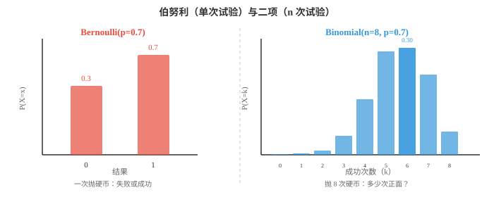
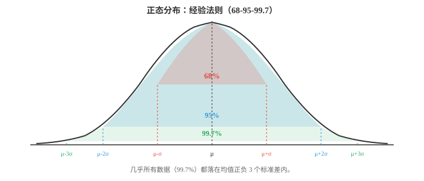
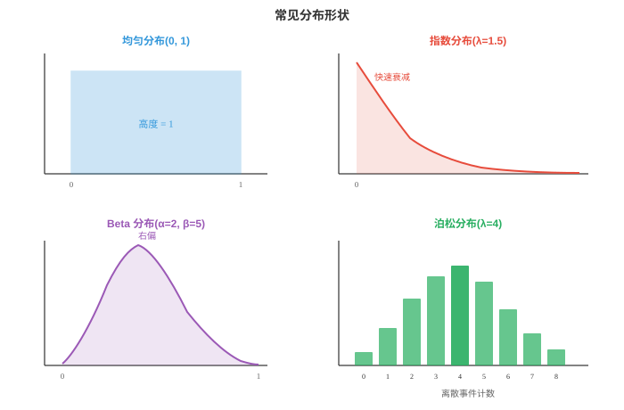

概率分布（Probability Distributions）¶
概率分布描述随机结果如何散布在可能取值上。本节梳理关键的离散与连续分布，包括伯努利、二项、泊松、高斯、指数、贝塔等；给出每一种的公式、直觉和 ML 应用，例如损失函数、先验和噪声模型。
- 第 4 章介绍了随机变量、PMF、PDF 和 CDF。本节列出 ML 和统计学中最重要的概率分布，并给出每一种的直觉、公式、均值和方差。
大白话
分布就是随机结果的“形状说明书”。选对分布，才能用合适的方式描述数据、计算概率和建立模型。
- 三个核心函数快速回顾，完整定义见第 4 章：
大白话
看分布时先分清它是在给离散结果的单点概率、连续结果的密度，还是截至某处的累计概率。
-
PMF \(P(X = x)\)：给出每个离散结果的概率，即柱状图的柱。
大白话
PMF 适合骰子点数这类可数结果，每根柱子的高度本身就是该结果发生的概率。
-
PDF \(f(x)\)：给出连续变量各点的密度；两点间曲线下的面积就是概率。
大白话
PDF 曲线在一个点的高度不是该点的概率，只有取一段区间下的面积才是概率。
-
CDF \(F(x) = P(X \le x)\)：截至 \(x\) 的累积概率，始终从 0 到 1，且永不下降。
大白话
CDF 像从左向右累计的进度条，x 越大，累计的可能性只能增加，最终到 1。
- 分布的支撑集（support）是 PMF 或 PDF 为正的取值集合。骰子点数的支撑集为 \(\{1,2,3,4,5,6\}\)；正态分布的支撑集为全体实数 \((-\infty, \infty)\)。
大白话
支撑集就是这个随机变量可能出现的合法范围。骰子不可能出 7，正态分布理论上则允许任意实数。
- 分布清楚地分为两类：离散分布，结果可数、使用 PMF；连续分布，结果不可数、使用 PDF。
大白话
计数、成功次数等用离散分布；等待时间、身高等可无限细分的量用连续分布。两类的概率计算方式不同。
- 伯努利分布（Bernoulli distribution）：最简单的分布。一次试验有两个结果：以概率 \(p\) 成功，即 1；以概率 \(1-p\) 失败，即 0。
大白话
伯努利分布只描述一次二选一试验：成功记 1，失败记 0，全部不确定性浓缩在一个参数 \(p\)。
- 均值：\(E[X] = p\)。方差：\(\text{Var}(X) = p(1-p)\)。
大白话
长期成功比例会接近 p；当 p 接近 0 或 1 时结果几乎固定，方差小，p 在 0.5 附近时最不确定。
- 每次抛硬币、每个是/否分类、每个二元结果都是伯努利试验。在 ML 中，sigmoid 函数的输出恰好是伯努利分布的参数 \(p\)。
大白话
二分类模型输出的不是硬判定，而是“成功为 1 的概率 p”；再根据业务阈值才转换成标签。
- 二项分布（Binomial distribution）：计算 \(n\) 次相互独立、每次成功概率均为 \(p\) 的伯努利试验中的成功次数。
大白话
二项分布把一次成败试验重复 n 次，只关心最终成功了几次，不关心成功具体出现在第几次。
- 第 01 节的二项式系数 \(\binom{n}{k}\) 计算在 \(n\) 次试验中安排 \(k\) 次成功的方式数。
大白话
有 k 次成功的某一种固定顺序概率相同，组合数负责数出这样的顺序一共有多少种。
- 均值：\(E[X] = np\)。方差：\(\text{Var}(X) = np(1-p)\)。
大白话
平均成功次数等于试验次数乘成功率。每次试验的不确定性累积起来，形成这个方差。

- 示例：将一枚有偏硬币，即 \(p = 0.7\)，抛 8 次，恰得 6 次正面的概率为 \(\binom{8}{6}(0.7)^6(0.3)^2 = 28 \times 0.1176 \times 0.09 \approx 0.296\)。
大白话
先算某个固定的六正两反顺序，再乘上 28 种不同排列，就得到恰好六次正面的总概率。
- 泊松分布（Poisson distribution）：已知平均速率 \(\lambda\) 时，计算固定时间或空间区间内事件的数量。它适用于罕见且独立的事件。
大白话
泊松分布适合数“一个固定窗口里发生几次”，例如一分钟收到几条消息。它只需一个平均速率 \(\lambda\)。
- 均值：\(E[X] = \lambda\)。方差：\(\text{Var}(X) = \lambda\)。均值等于方差是其标志性性质。
大白话
对纯泊松过程，平均发生次数和波动大小由同一个参数决定。真实数据若波动远大于均值，可能不适合泊松。
- 示例包括每小时邮件数，即 \(\lambda = 5\)、每页错别字数、每秒服务器请求数。在 ML 中，泊松回归对计数数据建模，避免线性模型预测出负计数。
大白话
这些目标都只能是 0、1、2 等非负整数。泊松回归按计数的结构建模，不会像普通线性回归那样给出负的“事件次数”。
- 当 \(n \to \infty\)、\(p \to 0\) 且 \(np = \lambda\) 保持不变时，Binomial\((n,p)\) 收敛到 Poisson\((\lambda)\)。这解释了泊松分布为何适合大总体中的罕见事件。
大白话
大量机会中每次成功都很罕见时，成功总次数的二项分布会近似成泊松分布，计算更简单。
- 几何分布（Geometric distribution）：计算第一次成功前所需的试验次数，例如“在第一次得到正面前要抛多少次硬币？”
大白话
几何分布不数一共成功几次，而是问要失败多少次、总共等多久才能等到第一次成功。
- 均值：\(E[X] = 1/p\)。方差：\(\text{Var}(X) = (1-p)/p^2\)。
大白话
成功率 p 越高，平均等待次数越少；例如 p=0.5 时，平均两次试验会首次成功。
- 几何分布具有无记忆性（memoryless）：再等待 \(k\) 次才成功的概率，不依赖于此前已等待的试验次数。这使它在离散分布中很特殊。
大白话
前面连续失败很多次，不会让下一次更容易或更难成功；每次独立试验都像重新开始。
- 负二项分布（Negative Binomial distribution）：推广几何分布，计算第 \(r\) 次成功前所需的试验次数，几何分布是 \(r=1\) 的特殊情形。
大白话
几何分布等第一次成功，负二项分布等第 r 次成功，因此它把“等待一次成功”推广成“累计到指定成功次数”。
- 均值：\(E[X] = r/p\)。方差：\(\text{Var}(X) = r(1-p)/p^2\)。
大白话
需要的成功次数 r 越多，平均等待试验次数按比例增长；成功率 p 越低，等待时间增长得更快。
- 实践中，负二项分布也用于建模过度离散的计数数据，即方差大于均值的数据，这是泊松分布无法处理的情形。
大白话
真实计数常比泊松模型允许的波动更大。负二项分布多了灵活性，能容纳这种额外起伏。
- 下面转向连续分布。
大白话
接下来研究取值可以无限细分的量。它们不直接给单点概率，而用曲线下面积表示某个范围的概率。
- 均匀分布（Uniform distribution）：区间 \([a, b]\) 内的全部值等可能。PDF 是一个平坦矩形。
大白话
在给定区间里没有任何位置被偏爱，等长的小区间拥有相同概率，所以密度曲线是平的。
- 均值：\(E[X] = \frac{a+b}{2}\)。方差：\(\text{Var}(X) = \frac{(b-a)^2}{12}\)。
大白话
对称的平坦区间中心就是平均值；区间越长，随机取到的数离中心可能越远，方差越大。
- 随机数生成器以 Uniform(0,1) 样本作为起点，其他分布通过变换这些均匀样本生成。
大白话
计算机常先生成 0 到 1 之间均匀的随机数，再经过数学变换，把它塑造成正态、指数等不同分布。
- 正态分布（Gaussian distribution）：统计学中最重要的分布。它由中心极限定理自然产生：不论原始分布如何，许多独立随机变量的平均值都趋向正态分布。
大白话
正态分布是中间最常见、两边逐渐稀少的钟形曲线。许多独立小影响相加或平均后，常会逼近这种形状。
- 均值：\(E[X] = \mu\)。方差：\(\text{Var}(X) = \sigma^2\)。
大白话
\(\mu\) 决定钟形中心在哪里，\(\sigma\) 决定它有多宽；同样中心的两个正态分布可以有完全不同的波动大小。
- 标准正态分布（standard normal）满足 \(\mu = 0\)、\(\sigma = 1\)。任意正态变量 \(X\) 都可通过 \(Z = (X - \mu)/\sigma\) 标准化为标准正态变量 \(Z\)。
大白话
标准化是先减去中心再除以标准差，把不同单位和尺度的正态变量都变到同一把刻度尺上。

- 经验法则（empirical rule），即 68-95-99.7 法则：
大白话
对正态数据，离均值几个标准差能快速估计覆盖多少数据，是判断异常值和尺度的常用心算规则。
-
大约 68% 的数据位于均值 \(\pm 1\sigma\) 内。
大白话
大约三分之二的数据离均值不超过一个标准差，属于最常见的中心范围。
-
大约 95% 位于 \(\pm 2\sigma\) 内。
大白话
离均值超过两个标准差已经比较少见，但在大样本里仍会偶尔出现。
-
大约 99.7% 位于 \(\pm 3\sigma\) 内。
大白话
超过三个标准差在真正正态数据里很罕见，因此常被当作需要检查的异常信号。
- 在 ML 中，正态分布无处不在：权重初始化、数据增强中的噪声、MSE 损失隐含的高斯误差假设，以及变分自编码器中的重参数化技巧。
大白话
正态分布既方便计算又常能近似许多随机扰动，因此从初始化噪声到回归误差模型都会反复出现。
- 指数分布（Exponential distribution）：建模泊松过程事件之间的时间。若事件以速率 \(\lambda\) 到达，它们之间的等待时间服从 Exponential\((\lambda)\)。
大白话
泊松分布数一个时间段内来了几件事，指数分布则问两件事之间要等多久；两者描述同一随机过程的不同视角。
- 均值：\(E[X] = 1/\lambda\)。方差：\(\text{Var}(X) = 1/\lambda^2\)。
大白话
到达速率越快，平均等待越短。速率翻倍时，平均等待时间会减半。
- 如同离散变量的几何分布，指数分布具有无记忆性：\(P(X > s + t | X > s) = P(X > t)\)。再等待 \(t\) 个单位的概率不依赖于此前已等待的时间。
大白话
已经等了很久不会改变未来还要等多久的分布，像一直没来车也不会让下一刻更“该来”。
- 伽马分布（Gamma distribution）：推广指数分布。它建模泊松过程中第 \(\alpha\) 个事件之前的时间，指数分布是 \(\alpha = 1\) 的情形。
大白话
指数分布只等下一次事件，伽马分布可以等到第 2 次、第 10 次事件，因此形状更灵活。
- 其中 \(\alpha\)，形状参数，控制形状，\(\beta\)，速率参数，控制尺度。\(\Gamma(\alpha)\) 是伽马函数，将阶乘扩展到实数：对正整数，\(\Gamma(n) = (n-1)!\)。
大白话
\(\alpha\) 决定要累计多少次事件才停止等待，\(\beta\) 决定事件有多快。伽马函数让原本只适用于整数的阶乘能处理连续参数。
- 均值：\(E[X] = \alpha/\beta\)。方差：\(\text{Var}(X) = \alpha/\beta^2\)。
大白话
形状参数增大通常拉长等待目标，速率参数增大则让事件更快到来，因此平均等待会缩短。
- 贝塔分布（Beta distribution）：定义在 \([0, 1]\) 区间，非常适合建模概率、比例和比率。
大白话
概率本身只能在 0 到 1 之间，贝塔分布天然遵守这个边界，适合表示“这个成功率究竟是多少”的不确定性。
- 分母 \(B(\alpha, \beta) = \frac{\Gamma(\alpha)\Gamma(\beta)}{\Gamma(\alpha + \beta)}\) 是贝塔函数，即归一化常数。
大白话
分母的作用是把整条曲线的面积调成 1，让它成为合法的概率密度，而不是任意高度的形状。
- 均值：\(E[X] = \frac{\alpha}{\alpha + \beta}\)。方差：\(\text{Var}(X) = \frac{\alpha\beta}{(\alpha+\beta)^2(\alpha+\beta+1)}\)。
大白话
\(\alpha\) 相对越大，分布越偏向 1；\(\beta\) 相对越大，越偏向 0。两者同时变大时，分布会更集中，表示更有把握。
- 贝塔分布是伯努利和二项似然的共轭先验。这表示先验为 Beta、数据为 Bernoulli 时，后验仍为 Beta，因此贝叶斯更新可解析计算。第 04 节会使用它。
大白话
先验和数据配对后仍是同一种贝塔形状，只需更新两个参数，不必重新处理复杂函数，这就是共轭先验的方便之处。

- 卡方分布（Chi-squared distribution），记为 \(\chi^2\)：取 \(k\) 个独立标准正态随机变量并将它们的平方相加，结果服从自由度为 \(k\) 的 \(\chi^2\) 分布。
大白话
把多个标准正态偏差平方后相加，负号都消失，只剩总偏离大小，因此卡方值永远非负。
- 均值：\(E[X] = k\)。方差：\(\text{Var}(X) = 2k\)。
大白话
自由度 k 越大，累加的平方项越多，平均卡方值和波动都会随之增大。
- \(\chi^2\) 分布其实是伽马分布的特殊情形，\(\alpha = k/2\)、\(\beta = 1/2\)。它出现于假设检验，第 4 章的卡方检验，拟合优度检验，以及计算方差置信区间。
大白话
卡方分布不是孤立的新东西，它属于伽马分布家族。许多比较“观察频数和预期频数差多大”的统计检验都用它。
- Student's t 分布（Student's t-distribution）：形似正态分布但尾部更厚。当用小样本估计正态总体的均值且总体方差未知时会出现它。
大白话
小样本还要估标准差时，普通正态分布太自信。t 分布把两端加厚，为更大的估计误差预留可能性。
- 参数 \(\nu\)，读作 nu，是自由度。随着 \(\nu \to \infty\)，t 分布收敛到标准正态分布。\(\nu\) 较小时，较厚的尾部为极端值赋予更多概率，反映小样本带来的额外不确定性。
大白话
样本越多，自由度越大，标准差估计越可靠，t 分布就越来越像普通正态分布；样本少时则更保守。
- 均值：\(E[X] = 0\)，适用于 \(\nu > 1\)。方差：\(\text{Var}(X) = \frac{\nu}{\nu - 2}\)，适用于 \(\nu > 2\)。
大白话
自由度太低时尾部厚到某些常见统计量都不存在，这说明极小样本下不确定性可以非常大。
- t 分布用于 t 检验，第 4 章，也会在贝叶斯推断中作为对未知方差积分消去后的边缘分布出现。
大白话
t 分布既是小样本均值检验的工具，也会自然出现在把未知方差考虑进去的贝叶斯模型中。
- 关键分布汇总：
大白话
这张表可用来快速选择分布：先看变量是计数、等待时间、连续误差还是概率本身，再看数据的波动特征。
| 分布 | 类型 | 支撑集 | 均值 | 方差 |
|---|---|---|---|---|
| Bernoulli\((p)\) | 离散 | \(\{0,1\}\) | \(p\) | \(p(1-p)\) |
| Binomial\((n,p)\) | 离散 | \(\{0,\ldots,n\}\) | \(np\) | \(np(1-p)\) |
| Poisson\((\lambda)\) | 离散 | \(\{0,1,2,\ldots\}\) | \(\lambda\) | \(\lambda\) |
| Geometric\((p)\) | 离散 | \(\{1,2,3,\ldots\}\) | \(1/p\) | \((1-p)/p^2\) |
| Uniform\((a,b)\) | 连续 | \([a,b]\) | \((a+b)/2\) | \((b-a)^2/12\) |
| Normal\((\mu,\sigma^2)\) | 连续 | \((-\infty,\infty)\) | \(\mu\) | \(\sigma^2\) |
| Exponential\((\lambda)\) | 连续 | \([0,\infty)\) | \(1/\lambda\) | \(1/\lambda^2\) |
| Gamma\((\alpha,\beta)\) | 连续 | \((0,\infty)\) | \(\alpha/\beta\) | \(\alpha/\beta^2\) |
| Beta\((\alpha,\beta)\) | 连续 | \([0,1]\) | \(\alpha/(\alpha+\beta)\) | 见上文 |
| \(\chi^2(k)\) | 连续 | \((0,\infty)\) | \(k\) | \(2k\) |
| Student's \(t(\nu)\) | 连续 | \((-\infty,\infty)\) | \(0\) | \(\nu/(\nu-2)\) |
编程任务（使用 CoLab 或 notebook）¶
-
为 \(n=20\)、多个 \(p\) 值绘制二项 PMF。观察形状如何从左偏变为对称，再变为右偏。
import jax.numpy as jnp import matplotlib.pyplot as plt from math import comb n = 20 ks = jnp.arange(0, n + 1) fig, axes = plt.subplots(1, 3, figsize=(12, 4), sharey=True) for ax, p, color in zip(axes, [0.2, 0.5, 0.8], ["#e74c3c", "#3498db", "#27ae60"]): pmf = jnp.array([comb(n, int(k)) * p**k * (1-p)**(n-k) for k in ks]) ax.bar(ks, pmf, color=color, alpha=0.7) ax.set_title(f"Binomial(n={n}, p={p})") ax.set_xlabel("k") axes[0].set_ylabel("P(X = k)") plt.tight_layout() plt.show() -
验证泊松对二项分布的近似。设 \(n = 1000\)、\(p = 0.003\)，比较 Binomial\((n, p)\) 与 Poisson\((\lambda = np)\)。
import jax.numpy as jnp import matplotlib.pyplot as plt from math import comb, factorial, exp n, p = 1000, 0.003 lam = n * p ks = jnp.arange(0, 15) binom_pmf = jnp.array([comb(n, int(k)) * p**k * (1-p)**(n-k) for k in ks]) poisson_pmf = jnp.array([lam**k * exp(-lam) / factorial(int(k)) for k in ks]) plt.figure(figsize=(8, 4)) plt.bar(ks - 0.15, binom_pmf, width=0.3, color="#3498db", alpha=0.7, label=f"Binomial({n},{p})") plt.bar(ks + 0.15, poisson_pmf, width=0.3, color="#e74c3c", alpha=0.7, label=f"Poisson({lam})") plt.xlabel("k") plt.ylabel("P(X = k)") plt.title("Poisson approximation to Binomial") plt.legend() plt.show() -
从正态分布抽样并验证经验法则。计算落在 1、2、3 个标准差内的样本比例。
import jax import jax.numpy as jnp key = jax.random.PRNGKey(42) mu, sigma = 5.0, 2.0 samples = mu + sigma * jax.random.normal(key, shape=(100_000,)) for k in [1, 2, 3]: within = jnp.abs(samples - mu) <= k * sigma print(f"Within {k}σ: {within.mean():.4f} (expected: {[0.6827, 0.9545, 0.9973][k-1]:.4f})") -
通过改变 \(\alpha\) 和 \(\beta\) 探索贝塔分布。绘制多种形状，观察分布如何从均匀变为偏斜和集中。
import jax import jax.numpy as jnp import matplotlib.pyplot as plt x = jnp.linspace(0.01, 0.99, 200) def beta_pdf(x, a, b): # Unnormalised for shape comparison return x**(a-1) * (1-x)**(b-1) plt.figure(figsize=(10, 5)) params = [(1,1,"Uniform"), (2,5,"Left skew"), (5,2,"Right skew"), (5,5,"Symmetric"), (0.5,0.5,"U-shape")] colors = ["#999", "#e74c3c", "#3498db", "#27ae60", "#9b59b6"] for (a, b, label), color in zip(params, colors): y = beta_pdf(x, a, b) y = y / jnp.trapezoid(y, x) # normalise plt.plot(x, y, label=f"α={a}, β={b} ({label})", color=color, linewidth=2) plt.xlabel("x") plt.ylabel("Density") plt.title("Beta distribution shapes") plt.legend() plt.grid(alpha=0.3) plt.show()